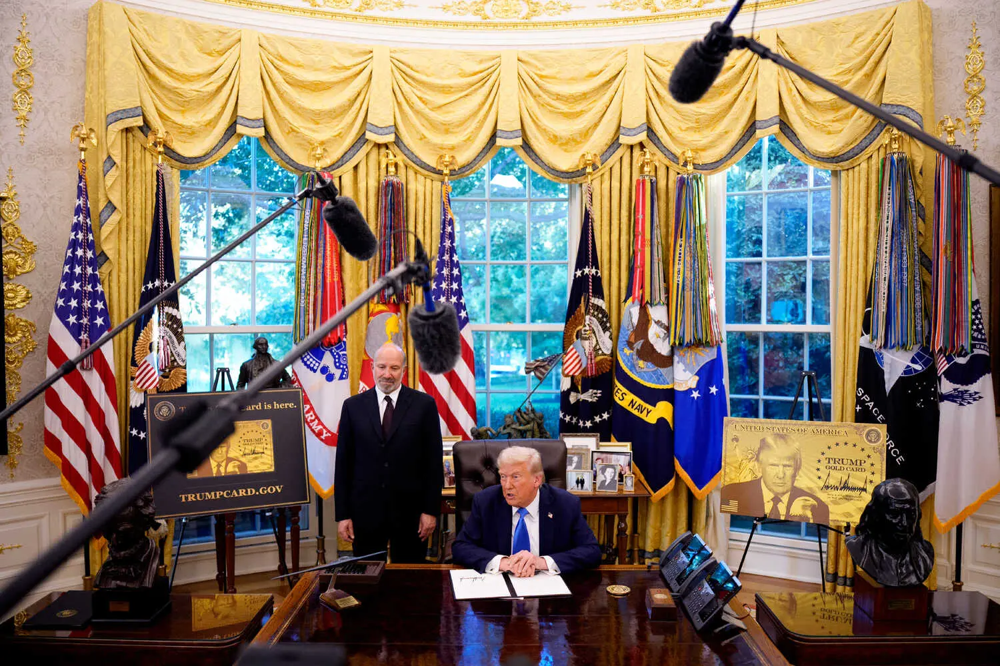

MUSIC REVIEW
On ‘Showgirl,’ Taylor Swift Has a Lust for Love (and Her Foes)
On her 12th original album, the pop superstar sounds hungry to embrace her future — but not until she attends to some unfinished business.
5 MIN READSwift Wears Bob Mackie’s Bejeweled Designs
3 MIN READ
BREAKING
Trump to Reverse $187 Million in New York Counterterrorism Cuts
Gov. Kathy Hochul had described the cuts, which would have devastated the state’s intelligence and counterterrorism operations, as “utterly shocking.”
2 MIN READ
